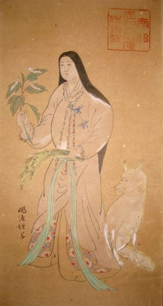
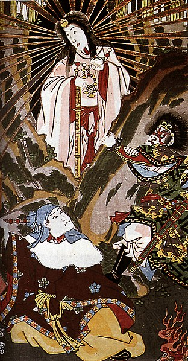
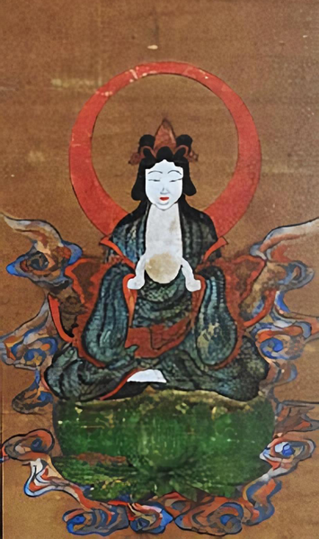
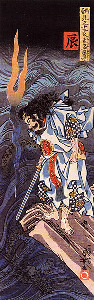

All cultures have their own ways to explain why things are the way they are. Though now we know many "unexplainable" things like weather patterns and diseases, a few hundred years ago they didn't know why something like a typhoon would happen in Japan, so they created their gods and told their stories that still live on today. Japan's mythology is similar to other mythologies, with many gods who control everything unexplainable, from luck to weather to food to why we have bright sunny days.
Throughout this site I will be showing you some of the stories this great mythology has to offer.
The story begins before everything, in a time where there was no time, in a place where there was nothing, until the birth of the Kamiumi and the Kuniumi otherwise known as the birth of the gods and land. With this, 3 gods were born, these gods would aid in the creation of the next generations of deities. Two of these deities were Izanagi and Izanami, they were siblings and after Izanagi used a naginata, a type of Japanese spear, encrusted with precious gems called Ame-no-nuhoko ("Heavenly Jeweled Spear", 天之瓊矛), which he used to create the first islands now known as Japan. The two deities decided they wanted children, however, when their child was born, it was born with it's arms and legs missing. The deities learned that they were preforming the ceremony incorrectly, Izanami must not talk before Izanagi in order for the ceremony to be preformed correctly, and once they followed the steps they had many children and their names are Tsukushi, Tsushima, Sado, Iyo, Awaji, Yamato, Oki, and Kagutsuchi.

One of my personal favorites is the story of how all the foods got to be where they are. One day, the goddess Amaterasu was invited to a banquet by the Ukemochi, goddess of food, though she couldn't make it to the banquet so she asked her brother, Tsukiyomi, to go in her place. Once he arrived, Tsukiyomi found a table covered in many different foods, when Ukemochi emerged from behind a rock carrying more food. Tsukiyomi grew curious of how Ukemochi would fill the empty platter with food so quickly, so Tsukiyomi decided to spy on Ukemochi to see where all the food was coming from and what he saw horrified him. Tsukiyomi watched as Ukemochi threw up rice as well as seeing her pull vegetables out of her ears, after seeing this, Tsukiyomi slashed the goddess with his sword and threw the food all around the world.
Another one of my favorite stories takes place shortly after Izanagi and Izanami created the island now known as Japan. Izanami had been pregnant, though, she wasn't feeling right about it, and when her time came to give birth to the baby something went wrong and ended up passing after giving birth. Izanagi did not want to live without Izanami, so he went to Yomi or as we would call it "The Land Of The Dead" to search for Izanami. This place was not meant to be explored, with demons (Oni) and other creatures lurking throughout the darkness, and while exploring Izanagi finds his wife. Izanagi is horrified to find that the once beautiful woman he had married turned into a freakish ghoul after her body quickly decomposed in Yomi. When Izanagi refused to join his wife, she grew angry with him, sending creatures to kill Izangi, though he managed to escape, blocking off the enterance to Yomi with a large stone nearby. After returning from Yomi, Izanagi felt dirty and impure, so he decided to take a ritualistic bath, during this bath he gave birth to Kami and Yokai, whilst bathing Izanagi began crying and from his left eye a goddess named Amatarasu was born, then from his right eye a god named Tsukiyomi was born, finally, from the snot coming from his nose, Susanoo was born.
  